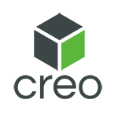
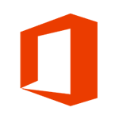

Florian Häberli

Motivierter Maschinenbauingenieur mit Erfahrung in Projektleitung, Konstuktion und Prototypenentwicklung auf der Suche nach neuen Herausforderungen.
Berufserfahrung
Projektmanager & Projektingenieur
Volle Verantwortung von Termin und Kosten, sowie sicherstellung der Auführung gemäss vertraglichen Vorgaben. Berechnung und Auslegung der Anlagekomponenten, erstellen technischer Datenblätter, Korrespondenz mit Kunden und Lieferanten. Teilnahme an der Inbetriebnahme der Verdampfungsanlagen international.
Projektleiter & Konstrukteur
Komplette Projektleitung von Auslegung, Konstruktion, Einkauf Komponente, Vergabe Fertigungsaufträge über Auslieferung bis Support beim Kunden für Industrieroboter in der Verpackungsindustrie.
Entwicklungsingenieur & Projektleiter
Leitung und Konstruktion von Entwicklungsprojekten im Bereich Bahntechnik. Enge Zusammenarbeit mit internen und externen Partern aus Fertigung, Einkauf Qualitätssicherung, Disposition und Project Lifecycle Management.
Bildungsweg
FHNW Brugg
ETH Zürich
ETH Zürich
Skillset
- Deutsch: Muttersprache
- Englisch: C2, schriftlich und mündlich, tägliche Konversation seit 2015
- Französisch: B1, gute Kentnisse
-  Creo Parametrics
- Siemens NX
- Siemens Solid Edge
-  Microsoft Office
- EasyDM
- SAP
Projects
Kostensenkungsprojekt Weichenverschluss
Grundlage dieses Projektes war der im Einsatz bewährte Weichenverschluss CKA12 von Siemens Mobility. Der Verschluss ist mechanisch top, jedoch auch sehr teuer, Ziel war es also die Kosten zu senken bei gleicher oder höherer Zuverlässigkeit. Mein Ansatz war eine Kombination aus Materialwechsel und einem neuen Fertigungsverfahren. Bisher wurden die Träger (siehe Bild) aus gegossener Aluminiumbronze gefertigt. Dieses Material hat ausgezeichnete Notlaufeigenschaften und eine hohe Zugfestigkeit, ist jedoch sehr kostenintensiv. Jeder gegossene Träger musste zudem auf Risse und Lunker geprüft werden, was die Kosten weiter erhöhte.
Die neuen Träger des CKA12 werden jetzt aus günstigem und robustem S355J2+N geschmiedet. Die Zugfestigkeit sowie die Kerbschlagzähigkeit sind bei diesem Material besser oder gleich gut wie Aluminiumbronze. Um die sehr gute Gleiteigenschaft der Aluminiumbronze weiter nutzen zu können, entwickelte ich eine geschmiedete Gleitplatte, welche in den Stahlträger geschraubt wird. Diese kann bei Bedarf einfach gewechselt werden, um deren Zustand einfach zu Kontrollieren hat diese eine Verschleissmarke. Das Wechseln der Gleitplatte geht schnell und einfach direkt an der Weiche. Dies spart somit weitere Kosten, da bisher der komplette Träger ersetzt werden musste. Nach einem Erfolgreichen Belastungstest bei der EMPA in Dübendorf verfasste ich einen Zulassungsbericht für das BAV und dieser wurde ohne Anmerkungen akzeptiert. Durch diese Massnahmen konnte der Preis eines Trägers um 300% reduziert werden. In diesem Preis sind die tieferen Wartungskosten noch nicht mitgerechnet. Das Projekt war ein voller Erfolg und wird seit der Einführung 2016 so verbaut.
Entwicklung eines schnelleren IML Roboters

Bei den IML Robotern ist die Zyklenzeit für den Kunden extrem wichtig. Der Gewinn pro Produkt (in diesem Fall Eimer für Farbe) ist extrem klein, somit muss eine hohe Stückzahl erreicht werden. Gleichzeitig sind viele Eimer nur für eine Begrenzte Zeit im Angebot, da der Kunde regemässig seine Produkt umstellen will. Somit kontaktierte mich der Kunde mit dem Wunsch die Zyklenzeit weiter zu reduzieren, zudem aber auch die Qualitätskontrolle der Eimer bereits innerhalb des Roboter zu machen. Bislang entnimmt der Roboter den fertigen Eimer, übergibt ihn an eine Bügelstation zum einpressen des Eimerbügels und wird dann mit einer High Speed Kamera auf Defekte untersucht und dann entweder auf das Gut- oder Ausschuss-Förderband abgelegt.
Mein Lösungsansatz war, der Zyklus in mehrere parallel laufende Zyklen zu unterteilen. Somit kann die Taktzahl erhöht werden ohne die einzelnen Schritte unnötig zu beschleunigen, was die Zuverlässigkeit senken und den Verschleiss fördern würde. So wird der fertige Eimer jetzt einer Zwischenstation übergeben, wodurch der Entnahmearm des Roboters sofort wieder frei ist um den nächsten Eimer zu holen. Die Zwischenstation übergibt den Eimer dann der Bügelstation und wird dadurch ebenfalls wieder frei um den nächsten Eimer zu übernehmen. Anstelle den Eimer jetzt in der Bügelstation zu prüfen (was rund 2 Sekunden dauern kann), wird dieser auf eine separate Prüftstation gestellt und geprüft. Danach wird der Eimer von einem Sortierer aufgenommen und je nach Prüfergebnis auf das korrekte Förderband abgelegt. Durch diese Aufteilung des Prozesses, in mehrere parallel laufende Vorgänge konnte die Zyklenzeit massiv reduziert werden, ohne die einzelnen Pneumatikzylinder und Servoachsen schneller fahren zu lassen. Im ganzen mussten einige Achsen mehr eingebaut werden, was sich jedoch nur minimal auf die Gesamtkosten des Roboters auswirkte und der Kunde für die deutlich schnellere Zyklenzahl auch gerne bereit war zu zahlen. In diesem Projekt habe ich gelernt, dass es wichtig ist bestehende Vorgänge kritisch zu Hinterfragen. Nur weil sich ein Prozess bislang bewährt hat, heisst es nicht, dass dieser auch jedes Mal der optimale Vorgang ist. Zudem hat dieses Projekt auch gezeigt, dass es sich lohnen kann etwas mehr in die Konstruktion zu investieren und dafür den Kunden einen grossen Mehrwert zu schaffen.
Wohnmobil
Im Zeitraum von April bis November 2019 habe ich bewusst eine Auszeit genommen um mir einen lang ersehnten Traum zu verwirklichen. Der Umbau eines Busses zu einem Campervan. Hierfür habe ich bereits im März einen schönen Bus der Post als Occasion gekauft (Jg. 2013 mit Automatikgetriebe und 85’000km). Bei der Planung hatte ich gewisse Wünsche, welche ich bislang in dieser Kombination noch nie in einem Campervan fertig zum Kaufen sah.
{kind=link}
{kind=link}
{kind=link}
{kind=link}
{kind=link}
- Full Size Bett, mindestens 160 x 200 cm mit richtiger Matratze
- Standheizung mit Dieselentnahme direkt vom Tank des Busses
- Kühlschrank mit Gefrierfach
- Solaranlage 300W
- Konventionelles Spülbecken
- Kein Umbau von Tisch/Sofa zu Bett notwendig
- Budget Innenausbau < 5000 CHF
Der Ganze Van ist mit 10cm dicker Isoliermatte gedämmt, zudem verhindert eine Dampfsperre allfällige Kondensation an den kalten Metallteilen. Um dem Innenraum ein angenehmes Klima und eine schöne Optik zu geben, habe ich den ganzen Van innen mit Täfer verkleidet. Das Holz wurde hierbei nur Lasiert, bleibt also offenporig und hilf die Luftfeuchtigkeit zu regulieren.
Das grösste Problem war das grosse Bett in den Van zu bekommen. Die Ladefläche ist zwar 3.7m lang, jedoch nur 1.7m breit. Für mich mit meinen 1.9m Körpergrösse stand somit ausser Frage quer zur Fahrtrichtung zu schlafen, wie es oft bei dieser Art von Campervan gemacht wird. Somit habe ich ein Bett konstruiert, welches längs der Fahrtrichtung liegt und im zusammengefahrenen Zustand nur 0.9m breit ist, und sich dann zu einer Fläche von 1.7m x 2m ausfahren lässt. Wichtig war mir dabei, dass dieser Vorgang auch schnell und einfach von einer einzelnen Person gemacht werden kann.
Lattenrost und Matrazen wurden anstelle von teuren Campingshops von Ikea bezogen, was das Budget stark geschont hat.
Das Solarpanel wurde mit Aluwinkeln verschraubt um die Hinterlüftung des Panels zu gewährleisten. Die Winkel selber wurden mit Spezialkleber direkt auf das GFK Dach verklebt. Dies ist eine bewährte Methode aus dem Camperbau, mit der einzigen Abweichung, dass ich die Aluminiumwinkel selber zugeschnitten habe, um eine flacheres Profil zu haben.
Beim Kühlschrank musste ich von den Standardlösungen abweichen. Ein konventioneller Campingkühlschrank in der gewünschten Grösse kostet schnell einmal über 1000.-, was bei dem geplanten Budget unverhältnismässig schien. Somit entschied ich mich dazu einen gewöhnlichen Haushaltskühlschrank zu verbauen und diesen mit einem Wechselrichter zu versorgen. Da aber somit der Gesamtwirkungsgrad stark leidet, habe ich die Elektronik modifiziert, dass der Termostat des Kühlschranks ebenfalls den Wechselrichter steuert und somit keine Leerlaufverluste mit sich zieht. Dies konnte den Stromverbauch effektiv halbieren und machte den Haushaltkühlschrank nur noch rund 10% weniger effizient als der extrem teure Campingkühlschrank.
Der letzte grosse Kostenpunkt war der Energiespeicher. Um dem Kühlschrank, Licht und Heizung auch bei starker Bewölkung und somit nur minimalem Solarstrom einige Tage zu betreiben können, berechnete ich, dass ich rund 1000Wh an Energie speichern muss. Um dies auf einem so kleinen Raum wie möglich, sowie mit minimalem Gewicht zu tun, entschied ich mich, anstelle einer Blei- eine Lithiumbatterie zu verwenden. Da aber die fertig zu kaufenden Varianten in dieser Grösse über 1000.- kosten, habe ich mir die dafür benötigten Zellen und Elektronik zum Selberbau aus China direkt vom Hersteller gekauft. Dieser Hersteller beliefert auch Markennamen mit den gleichen Zellen, somit hatte ich keine Bedenken diese direkt zu beziehen. Der Zusammenbau war für mich denkbar einfach und ich konnte die ganze Batterie in vergleichbarer Qualität und gleicher Kapazität für rund 300.- bauen.
Schlussendlich konnte das gesetze Budget sogar unterschritten werden. Die grossen Einsparungen wurden alle dort gemacht wo ich erkannt habe, dass ich mit meinem Wissen von Elektronik und Mechanik günstige Standardteile verwenden konnte, anstelle auf teure Speziallösungen zurückzugreifen. Diese Erkenntnis lässt sich auch oft im Arbeitsalltag als Ingenieur anwenden. Speziallösungen haben sicher ihren Platz für Anwendungen wo das nötige Fachwissen nicht vorhanden ist, aber mit etwas Kreativität und Geschick lassen sich oft deutlich günstigere Teile verwenden, die dank Massenfertigung einen guten Qualitätsstandard erreichen und sehr leicht zu bekommen sind.
Personal
Wer ist die Person hinter dem Lebenslauf? Ich lebe zusammen mit meiner Freundin und unseren beiden Katzen in einer liebevoll eingerichteten Wohnung in Wallisellen. Da wir unseren Stubentigern auch was bieten wollen, haben wir im Wohnzimmer einen tollen Katzen Parcours gebaut. Am Feierabend nach Hause zu kommen und freudig von den Katzen begrüsst zu werden ist ein super Lohn für all den Aufwand.
{kind=link}
{kind=link}
{kind=link}
Eines meiner grossen Hobbies ist LARP, kurz für Live Action Role Play. Hierbei schlüpft man einen Abend, oder auch ein ganzes verlängertes Wochenende, in die Rolle eines anderen Charakters. Danach ist das ganze sehr wie ein Improvisationstheater, nur dass es kein Publikum gibt. Es ist extrem interessant für einige Zeit in eine andere Rolle zu schlüpfen und die Welt völlig anders als sonst wahrzunehmen. Es hat mir sehr dabei geholfen, verschiedene Ansichtsweisen und Perspektiven zu entwickeln. Einmal spielt man den unbezwingbaren Held, der sich vor nichts fürchtet und seine einzige Sorge ist, dass der Met für die Feier seiner Heldentaten ausgehen könnte. Und das nächste Wochenende ist man den von Hunger geplagten Bauer, der trotz all seiner Probleme irgendwie über die Runden kommt und hie und da den mächtigen Helden aus der Ferne sieht und sich wünscht, er könne nur für einen Tag an seiner Seite Speisen. Hier ist ein Bild von einem Zauberschule LARP, die Kostüme helfen sehr sich besser in die Rolle zu versetzen und helfen auch den anderen Spielern den Charakter besser einschätzen zu können. Ich habe durch das LARPen auch gelernt sehr spontan zu sein, Antworten aus dem Ärmel zu schütteln und auf die Schnelle jemanden besser einzuschätzen. Ein weiteres Hobby von mir ist die Instandsetzung und das Fahren von Oldtimer Mofas. Die einfache und bewährte Technik macht mir grosse Freude. Ein altes Mofa in einer Scheune zu finden und es dann wieder zu neuem Leben erwecken ist ein wirklich tolles Gefühl. Zudem lerne ich dabei auch sehr viel, denn es ist eines, ein Mofa zu «flicken» damit es wieder fährt, oder es wirklich zu revidieren, neue Lager einsetzen, Kurbelwellenspiel einstellen und neue Bremsen und Gangschaltung zu verbauen und den Motor auch wieder richtig schnell und schön hochdrehen zu hören. Hie und da spendiere ich den Mofas auch moderne upgrades, wie zum Beispiel eine saubere 12V Stromversorgung für eine komplette LED Front- und Rückbeleuchtung, oder ein USB Ladeport und Handyhalter für GPS.